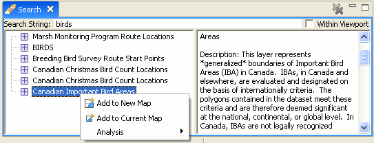

Using the Search view¶
Navigating using Search¶
The Catalog view was used to explore layer information that has already been located. The seach view is used to discover information available on public catalog such as the Geo Connections discovery portal.
Open the Search view (if it is not already on screen you can find it in :menuselection:Window –> Views –> Search`)
Enter a search phrase, in this example we will use birds

Select any layer, you can using the right click context menu or drag and drop to add this information to a map

Related reference